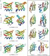
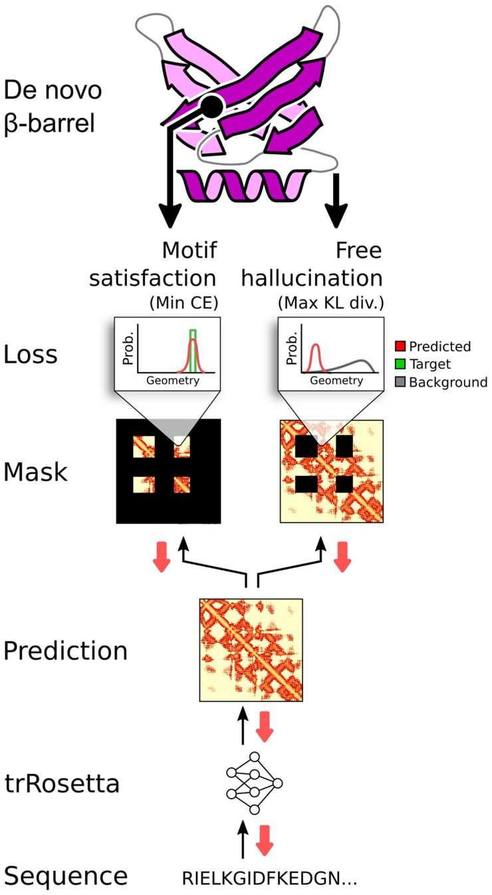
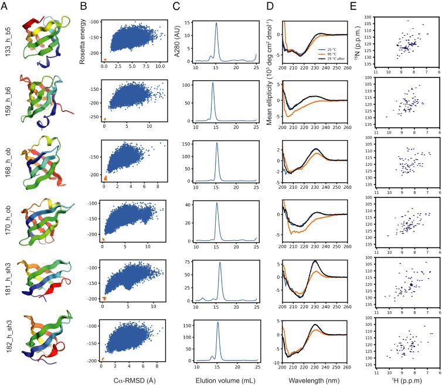

De novo design of small beta barrel proteins
Abstract
SignificanceDe novo design of mini-proteins for engineering new functions has primarily focused on all-alpha and alpha-beta folds. Despite the enormous functional diversity observed in naturally occurring beta barrels less than 70 residues in length, the de novo design of these structures has not been achieved. Here, we describe the de novo design and characterization of four different classes of small beta barrels. The results provide insight into the determinants of folding and design of this important class of proteins, and provide routes to the design of high-affinity binding proteins.Keywords: protein design, small beta barrels, high-throughput screening, machine learning
While there has been considerable success in de novo design of all-alpha and alpha-beta folds (1–6), the design of globular all-beta proteins from scratch has only been achieved quite recently (7–9). The lag in progress was likely due to the tendency of all-beta designs to aggregate or be unstable, and also due to a focus on engineering “ideal” proteins with canonical secondary structure and short turn connections. All-beta folds often contain nonlocal backbone hydrogen-bonding interactions between residues that are distant in sequence that can be difficult to design since free strand edges can interact intermolecularly causing the formation of amyloid aggregates (10, 11). Furthermore, globular beta-folds often contain curved sheets and without incorporating nonideal features like beta-bulges and glycine kinks within the bent strands, considerable conformational strain can arise from steric clashes and unfavorable left-handed backbone twist. The incorporation of such nonideal features enabled the successful de novo design of an eight-stranded beta barrel (7), a single beta-sheet that twists to make nonlocal hydrogen bond interactions between the first and last strands closing the sheet into a barrel-like structure. However, the de novo design of smaller barrel-like proteins with six or fewer strands and less than 70 amino acids has not to our knowledge been achieved.
Small beta barrel proteins with six or fewer beta strands, such as SH3 domains and OB-folds, have an extremely diverse functional repertoire in nature involving interactions with proteins, peptides, oligonucleotides, oligosaccharides, structural scaffolding, shape shifting, and more. The features of these folds giving rise to this vast functional diversity include a large sequence space compatible with their simple structure, versatile binding sites involving concave sheet surfaces and pockets flanked by variably structured beta-turns and loops, and self-shape complementarity, which enables assembly into higher order oligomers. Learning how to systematically generate such proteins could thus considerably expand the range of activities and functions accessible to de novo protein design. For design of protein binding and other functions, small proteins also have considerable intrinsic advantages: They can be encoded on single long oligonucleotides (~230 nt) that can be synthesized in parallel in very large arrays greatly reducing the cost of gene synthesis, the density of binding (or other function) sites per unit mass is higher, and for therapeutic applications they can penetrate better into solid tumors.
We set out to design soluble beta barrels of less than 70 amino acids. We chose to focus on four different beta barrel topologies, two of which occur frequently in nature, and two of which occur rarely if at all (Fig. 1 A–D). The first two, the SH3 and OB folds, consist of two orthogonally packed three-stranded antiparallel beta sheets where one sheet involves three consecutive beta strands and the other a beta hairpin paired with a single terminal strand. In the SH3 fold, the terminal strand is at the C terminus, and in the OB-fold, at the N terminus. The second two, which we refer to as b5 and b6, are up-and-down barrel-like folds consisting of a single antiparallel beta-sheet with five and six strands, respectively, that twists into a closed barrel by pairing the N and C termini. While larger barrels with eight or more strands are common, small up-and-down barrels are surprisingly rare in nature despite their simple topology; at the time of writing this manuscript, we were not aware of any structures with b6 topologies in the Protein Data Bank (PDB).
Results
Blueprint-Based Design.
We first explored the design of small beta barrels using a Rosetta “blueprint” approach similar to that used to design larger eight-stranded beta barrels (7). Blueprint maps specifying the secondary structure and their lengths, ABEGO backbone torsion angle bins (12, 13), and backbone hydrogen bonds were used to build sequence agnostic barrel-like backbones using Rosetta Monte Carlo fragment assembly starting from an extended chain. A key feature of the structure blueprints is the hydrogen bond pairing between the beta strands, which defines the overall topology and shear number (S), the shift in strand registry between the first and last strands (14, 15). S determines the tilt of the strands with respect to the central axis of the barrel, the barrel diameter, and the core packing arrangement. Small beta barrel structures in nature typically have S ≅ 2n where n is the number of strands. For the SH3 and OB designs, blueprints were constructed with S = 8 or 10 based on representative PDB structures (SI Appendix, Fig. S1). For b5 and b6 designs, we experimented with a range of blueprints by generating structures through Rosetta fold assembly calculations, and blueprints which did not give rise to the targeted 3D structures were discarded. For the b5 blueprints, parallel pairing of strands 1 and 5 completed a barrel with S = 8. Initial b5 backbone generation attempts failed to complete hydrogen bond strand pairing of the last hairpin due to the bend required for the last strand. To address this issue, we incorporated additional beta-bulges in the blueprint which allowed the pairing to continue along the bend (Fig. 1E). Strand pairing was also improved with the addition of beta-bulges for b6 designs. DALI (16) and TM-align (17) searches of the PDB with the generated b5 and b6 backbone structures did not identify matches with similar topologies; the top hits were SH3 and larger beta barrels of lipocalin-like topologies with the exception of a match (TM-score of 0.57 and rmsd of Cα atoms of 2.58 Å) to chain I of the yeast mitoribosomal large subunit (18), which has long loops connecting the strands. For all topologies, blueprint variations were made in the beta-turns using the following common ABEGO turn types observed in native small barrel-like folds: GG (canonical type I′ β-turn), AA (type I β-turn), EA (type II′ β-turn), and AAG (β-turn with intrinsic G1 bulge). Additional variations were made in loop regions and the lengths of N-terminal helix barrel capping structures. Distance constraints were also included to help maintain the relative position of N-terminal helix and loop capping structures if present (SI Appendix, Fig. S2).
For each blueprint, we extensively sampled structure and sequence space by running up to 10,000 independent trajectories of backbone generation followed by Rosetta sequence design calculations (Materials and Methods) on Rosetta@home (https://boinc.bakerlab.org/rosetta). Designs were selected for Rosetta energy landscape calculations based on design quality metrics (Materials and Methods) and chosen for in vitro biophysical characterization based on the extent to which the energy landscape funneled into the designed structure using the ff_metric (19). Sequence similarity to native proteins in the NCBI nonredundant protein database was not detectable using BLAST with an E-value threshold of 0.1 for all designs selected for experimental characterization. Synthetic genes encoding the designs were ordered and the proteins were expressed in Escherichia coli and purified using nickel column affinity chromatography. 72 out of 80 designs expressed, 43 were soluble, and 19 and 9 appeared to be monomers and dimers by size exclusion chromatography (SEC), respectively. Eleven monomers and five dimers had far-UV circular dichroism (CD) spectra suggesting folded structures, and 11 designs had close to the expected number of well-dispersed sharp peaks from 1H-15N HSQC NMR spectroscopy [6 SH3, 3 OB, 1 b6, and 1 b5; 2 (1 OB and 1 b5) appeared to be dimers according to SEC].
We succeeded in solving solution NMR structures of two of the monomeric designs, which had the expected number of peaks in 1H-15N HSQC spectra (29_bp_sh3 and 33_bp_sh3; Fig. 2). Both solution structures matched closely to the computational designs with rmsds of 1.2 Å and 2.3 Å for 29_bp_sh3 and 33_bp_sh3, respectively (Fig. 3). Although the blueprints for these designs were based on native structures, there were substantial designed structural differences that were recapitulated in the solved structures. The helix in 29_bp_sh3 was shifted inward toward the rest of the structure with an average change in distance of 5.1 Å among the first 5 Cα atoms compared with the native structure from which the blueprint was obtained (1KQ1). This part of the helix is involved in intermolecular interactions within the 1KQ1 homohexameric assembly, and shifting the helix likely improved monomer packing. The second turn in 33_bp_sh3 was shortened by one residue compared with the blueprint source (3P8D) through the replacement of a three residue turn with AAG backbone torsion angle bins to EA, which forms a type II′ β-turn.

We were also able to obtain a high-resolution crystal structure of a third design, 17_bp_sh3, which closely matched the designed model with an rmsd of 1.6 Å (Fig. 3). This design was monomeric as confirmed by SEC–MALS (SI Appendix, Fig. S3A) and had high thermal stability with no change in CD spectra at 95 °C (Fig. 2). There were nearly double the expected number of NMR peaks at 10 °C and broadened peaks closer to the expected number at 25 °C suggesting exchange of states possibly between monomer and dimer. In the crystal structure, two three-stranded sheets from two monomers come together to form a six-stranded sheet, which may correspond to the transient state observed by NMR. While overall the crystal structure is very similar to the design model, in the third hairpin consisting of strands 3 and 4 (the “distal loop” in SH3 terminology), strand 4 is involved in the antiparallel interstrand paired dimer interface causing the hairpin to shift outward (SI Appendix, Fig. S4).
As mentioned in the introduction and apparent in the dimeric crystal structure, all-beta structures have been difficult to design likely due to their tendency to oligomerize through intermolecular strand pairing. Indeed, 74 percent of the soluble experimentally characterized designs were oligomers, and 40 percent of the expressed designs aggregated. To investigate sequence and structure features enriched in soluble monomeric designs, we used array-based oligonucleotide synthesis to synthesize genes encoding tens of thousands of designs and screened for folding and oligomerization state using recently developed high-throughput assays. A total of 13,990 blueprint designs were made with varying combinations of the common ABEGO turn types described above and first screened for protease resistance using a previously described yeast surface proteolysis assay (3), followed by a recently developed secondary screen that can identify soluble monomeric designs in a complex mixture using SEC and mass spectrometry (MS) barcode technology (20, 21); See SI Appendix, Supplementary text and Materials and Methods for detailed descriptions of both assays). In a previous study (3), iterative design-and-build test cycles using the protease assay resulted in systematic improvement in designs of ~40 residue all alpha and alpha/beta structures based on a linkage between protease resistance and proper folding and stability. However, only six percent of the small beta barrel designs were found to be protease resistant, and experimental characterization of the top protease-resistant designs in each fold class (see SI Appendix, Supplementary text for details) suggested the screen has a selection bias toward oligomerization for all beta proteins (77 percent of the top protease-resistant soluble designs were oligomers). Despite this selection bias, in the subsequent solution MS barcode screen, we were able to identify 99 protease stable designs (85 SH3, 12 b6, 1 b5 and 1 OB) in SEC fractions that were within the expected elution volume range for their monomeric states. From these designs, we selected 19 for in vitro biophysical characterization and all 19 expressed and were soluble, 16 appeared to be monomers (11 SH3, 4 b6, and 1 b5) as suggested by monodisperse SEC peaks with monomeric elution profiles (three were polydisperse, two with a likely dimer shoulder and another with a broad peak spanning both monomer and dimer fractions), and 17 had CD spectra suggesting structure. We selected six designs for 1H-15N HSQC NMR spectroscopy, and all six had spectra suggesting folded structure (4 b6, 1 b5, and 1 SH3); five had close to the expected number of well-dispersed sharp peaks at 25 °C and 1 (b6) had well-dispersed sharp peaks at 37 °C.
With an 84 percent success rate for soluble monomer expression, and 74 percent confirmed by CD, the results highlight the power of the MS barcode approach to identify soluble monomeric designs from large libraries, which should be useful in future efforts to design all-beta folds and proteins that tend to oligomerize more generally. Comparison of the sequences and structures of the 99 soluble monomeric designs to the full set of experimentally characterized designs revealed that the soluble monomeric designs on average have improved local sequence-structure mapping, more favorable Lennard–Jones interactions, and reduced spatial aggregation (SAP) scores (22) (SI Appendix, Fig. S6). Filtering designs based on these criteria should increase future design success rates.
Design by Deep Network Hallucination.
While the Rosetta-based design work described above was in progress, there were concurrent developments in de novo design using deep network hallucination. In this approach, a deep neural network trained for structure prediction is used to guide optimization of an initial random sequence into a sequence predicted to fold into some structure. As originally described, the target structure was not specified in advance, and this “free hallucination” approach generated a wide range of folded structures (23). While folded monomeric proteins were obtained for all alpha and alpha/beta proteins, no folded proteins were obtained for all beta hallucinations. Since our interest here was in small beta barrel structures, we adapted the hallucination procedure to generate structures with this topology by incorporating into the loss function a second term, which favors the formation of specific structural elements (Fig. 4); in the beta barrel case a particular arrangement of the beta strands. For this “constrained hallucination” approach, we used trRosetta which predicts interresidue distances and orientations [the more accurate AlphaFold2 (24) and RoseTTAFold (25) had not yet been developed]. Sequence optimization was carried out by back propagating gradients assessed on the distances back to the input sequences (26).

Constrained hallucination has the advantages of not only requiring less computing to generate high-quality structures versus the Rosetta blueprint methods but also simplifying the design of diverse structures. The blueprint approach requires specifying the topology, secondary structure lengths, and other structural features for each design while having to follow rules consistent with known protein structures; however, this is not necessary with constrained hallucination since the design rules are largely encoded in the network, albeit in the form of millions of parameters that are not readily human interpretable. To investigate whether constrained hallucination could be used to design a structurally diverse set of high-quality barrel-like structures, we focused on hallucinating the turn and loop regions from blueprint designs and native structures with varying lengths (Materials and Methods). A total of 100 random-length hallucinations were sampled for each run for a total of 66,000 trRosetta distance and orientation outputs. The results were organized by groups according to fold class and hallucinated length signature (e.g., 1KQ1_L5L8L6L4L6L1 corresponding to the hallucinated lengths from N to C terminus for the SH3-like 1KQ1 fold), and for each group, the hallucination with lowest total loss and highest accuracy (how close the trRosetta distances were to the input distances) was selected for 3D structure energy minimization resulting in 13,984 hallucinated designs with unique length signatures within each fold class. Producing such diversity in unique loop lengths using structure blueprints would be quite difficult in comparison.
Previous studies (26) have suggested that using trRosetta for structure generation followed by Rosetta for sequence design can generate more funneled energy landscapes than Rosetta alone and deeper free energy minima than trRosetta alone due to the strengths of Rosetta in modeling atomic-level detailed packing interactions in the folded structure. We thus redesigned the sequences of the hallucinations using Rosetta FastDesign (27). Since the success rates of the blueprint designs were low, we first focused on improving the sequence design protocol to optimize design quality features. One feature that particularly stood out as being suboptimal compared with native monomeric proteins of similar topology and size was the amount of buried nonpolar surface area (NPSA) from hydrophobic amino acids, which is an important determinant of folding stability (3). The average buried NPSA per residue for the monomeric native set (SI Appendix, Selection of Native Structures) was 62 Å2 compared with 53 for the experimentally characterized designs. The lower values compared with native structures resulted from disallowing hydrophobic amino acids on the solvent exposed surface by the Rosetta LayerDesign protocol (28). To shift the buried NPSA distribution closer to the native distribution, we modified the layer settings to allow high beta-sheet propensity hydrophobic amino acids, Ile, Val, Tyr, and Trp, on the surface layer of strands, and biased the frequencies of these amino acids along with Thr, Met, and Phe to match the frequencies observed in the native set using the Rosetta residue type composition score term [aa_composition (29); we did not include Met and Phe in the modified layer settings since their average frequencies on strand surfaces in the native set were significantly lower at 0.22 and 0.26, respectively, versus 0.60, 0.69, 0.52, and 0.72 for Ile, Val, Tyr, and Trp, respectively]. We also used fragment-based position-specific scoring matrices [PSSMs (19)] to improve local sequence to structure compatibility.
Multiple FastDesign variations were run for each hallucinated design and then filtered based on design quality metrics (Materials and Methods). The selected designs had a buried NPSA distribution closer to the native distribution (SI Appendix, Fig. S8) with an average value of 59 Å2, and the average Rosetta energy per residue improved to −3.6 kcal/mol from −1.9 compared with the original hallucinated designs. Rosetta energy landscape calculations were then run for each design, and 71 were selected for experimental characterization based on the quality of their energy landscape funnels using the ff_metric. Seventy designs expressed, 68 were soluble, and 28 and 27 were likely monomers and dimers according to SEC with single monodisperse peaks, respectively. Of note, 22 out of the 27 designs characterized by CD spectroscopy had spectra suggesting structure, and 24 (9 OB, 7 SH3, 5 b6, and 3 b5) out of 26 designs characterized by 1H-15N HSQC NMR spectroscopy (SI Appendix, Fig. S12) had close to the expected number of well-dispersed sharp peaks. Biophysical characterization results of six hallucinated design examples are shown in Fig. 5. Most of the successful designs that were monomeric and folded based on SEC and HSQC were SH3 and OB folds (7 OB, 7 SH3, 3 b6, and 2 b5). Comparing sequence and structure features of the monomeric designs with well-resolved HSQC spectra to the full set of designs generated with FastDesign (45,761 designs) revealed enrichment of features similar to those in the MS barcode screen: increased hydrophobicity, more favorable Lennard Jones and solvation interactions, and improved local sequence–structure compatibility (SI Appendix, Fig. S7).

We were able to obtain a high-resolution crystal structure of a hallucinated OB fold, 170_h_ob, with a Cα rmsd of 2.38 Å from the designed model (Fig. 3D; the hallucinated length signature for this design was L3L6L2L13L4L1). 29 out of the 59 backbone residues in the designed model were unconstrained during hallucination. Most of the model matched closely to the crystal structure with a Cα rmsd of 0.82 Å spanning 45 residues; however, there were significant differences in the first four residues of the N terminus and ten residues spanning the last hairpin turn and strand in the C terminus. Since the N-terminal residues are polar and largely solvent exposed, the deviations in this region are not surprising. The differences in the C terminus involved a strand register shift caused by a designed beta-bulge missing in the crystal structure. These structural deviations may in part be due to the additional linker and histidine tag residues added to the expression construct.
Discussion
The range of computational and experimental approaches used in this study is a testament to the recent blossoming of de novo protein design. On the computational front, Rosetta blueprint–based design and deep learning hallucination highlight the contrast between traditional physically (and human expert) based design and deep learning approaches in which the physical principles and expertise are replaced by the millions of parameters of the network–the tradeoff is loss of physical transparency for a gain in procedural simplicity and accuracy. On the experimental front, traditional biophysical characterization, while providing detailed structural and thermodynamic information, is intrinsically low throughput as the methods (NMR and X-ray structure determination in particular) are time and resource intensive, and recently developed yeast display proteolysis and MS barcoding approaches enable the evaluation of a much larger range of designs albeit at considerably lower resolution. Here, we summarize the major lessons from this combination of approaches, both about beta barrel design and about the strengths and weaknesses of the approaches themselves, and describe the opportunities opened up by the capability of designing small beta barrels with high accuracy and stability.
First, our results provide insight into the relative strengths and weaknesses of traditional protein design using physically based models such as Rosetta, and deep learning approaches. The Rosetta blueprint–based approach provides considerable control over backbone geometry and topology, but design rules need to be understood in advance for successful blueprints, which makes the overall design process more difficult. For this reason, blueprints have been primarily used to design relatively simple and idealized structures, and it can be tedious to sample considerable structural diversity as blueprints must be made for each case. Rosetta fragment–based assembly for blueprints with considerable nonlocal interactions can be compute time intensive, as are the full-atom design and relaxation steps in the design end game. In contrast, the machine learning–based hallucination strategy explored here does not provide as precise control over backbone geometry, placement of atoms, and molecular interactions but readily provides more diverse solutions satisfying the overall design conception. The deep learning model used to guide the design process essentially has prior knowledge of the local structural features that promote structure formation, for example the connections/turns/hairpins between strand pairs and N-term capping motifs in the context of a beta barrel-like topology. The best results came from a combination of methods: using hallucination for backbones and Rosetta for sequence design and structure relaxation. Roughly 90 percent of these designs that were characterized with NMR were folded compared with around 30 percent of the blueprint designs (See Table 1 for the results’ comparison). Recent work from our group suggests that ML methods may soon take over the sequence design step as well. Overall, while the deep learning approaches are simpler to use because of the huge amount of information about protein structure and protein sequence-structure relationships inherent in the models, they have the considerable disadvantage that the information guiding design is spread over the millions of parameters of the networks; in contrast the Rosetta blueprint approach and design methodology, while more cumbersome, makes all of the concepts feeding into the design explicit in the blueprint, and the details of the structure are determined by the physically transparent force field.
Second, our combination of experimental evaluation by high-throughput methods and more detailed individual biophysical characterization provides insights into the strengths and limitations of the different approaches. We explored two high-throughput methods here: a primary protease stability screen using yeast display followed by a secondary SEC–MS screen using peptide barcodes. The protease stability screen has the advantage of the direct link of genotype to phenotype on yeast, allowing next-generation sequencing to be used as a tremendously scalable readout. However, we observed a bias toward designs that oligomerize when expressed individually; protease resistance particularly for beta proteins may arise not only from folding but also from aggregation on the yeast surface. The SEC–MS approach has advantages over the protease stability screen in directly assessing solubility and oligomerization state in solution, but fewer variants can be tested in parallel due to the reduced sensitivity and multiplexing capacity of mass spectrometry compared with next-generation DNA sequencing. While we did not do a direct head-to-head comparison, we can compare the fractions of proteins tested using traditional more intensive biophysical methods resulting from the two screens that were folded. The largest differences were in the fraction of soluble designs and their oligomeric state; all 19 hits from the SEC–MS screen were soluble and 18 were monomers or dimers, whereas only 13 out of 24 hits from the protease stability screen were soluble and only four were monomers or dimers. Five out of the six SEC–MS screened designs that were characterized with 1H-15N HSQC NMR were folded and 16 out of 19 were potentially folded monomers or dimers based on CD. With the improved success rate of deep learning–based designs, using SEC–MS as a primary screening tool may suffice.
Third, our results provide insight into the determinants of folding and design of small beta barrels. Inclusion of strategically placed beta bulges was necessary to achieve the strand bending required to form the b5 and b6 folds. Because of the small size of the core, incorporation of surface hydrophobic residues favored folding by increasing the overall hydrophobic burial through interactions between adjacent surface residues and resulted in lower Rosetta energies and likely increased stability. We observed more favorable Lennard–Jones interactions, more hydrophobic burial, and more optimal local sequence–structure relationships in both the soluble monomeric designs generated using Rosetta and in the hallucinated designs with well resolved NMR HSQC spectra compared with the overall population of experimentally characterized designs. A challenge in designing small beta barrels is how to balance hydrophobic burial and packing while maintaining the backbone hydrogen bonds necessary for closing the barrel; our results suggest that increasing hydrophobic interactions contributes to stability and folding provided that they can be accommodated by the packing and hydrogen-bonding constraints of the barrel.
Fourth, our results provide insight into the extent to which the sampling of folds in nature reflects their inherent robustness or evolutionary history. We succeeded in the de novo design of all four of the target topologies, but overall had higher success rates on the SH3 and OB folds, which are widely sampled in nature, than the much rarer b5 and b6 folds. Successful designs of the b6 fold suggest that there is nothing in principle that disallows this topology. Overall, our lower success rates for b5 and b6 designs could reflect an intrinsically lower folding robustness or reduced rigidity of these folds, the difficulty of closing a barrel with a small number of strands, a greater tendency of all beta structures with short loops like b5 and b6 to oligomerize, or perhaps the fewer natural examples to learn from.
The ability to design small beta barrel-like folds should considerably enhance protein binder design. Their surfaces can tolerate significant sequence variation, and considerable backbone structural diversity can be sampled in the hairpins and turns (as for example in the long RT and n-src loops of SH3 domains, which play functional rather than structural roles). Together with the concave surface of the protein, well suited for peptide and protein binding, and the small size of the proteins which enables encoding on large scale oligo arrays, these designs complement the largely helical protein scaffold sets currently used for protein interface design. Toward this end, we provide here a scaffold set of 12,911 mini-barrels designed using constrained hallucination in the supplementary dataset archive (https://doi.org/10.5281/zenodo.6529943), which have a high probability of folding based on AlphaFold2 metrics (pLDDT > 88 and model rmsd < 2.0) shown to be accurate indicators for design success within our group.
Materials and Methods
Rosetta Blueprint Backbone Generation, Sequence Design, and Selection.
Backbone generation.
3D beta barrel-like protein backbones were constructed using a blueprint method described previously (1, 7, 30). Barrel-like topologies were generated using Rosetta Monte Carlo fragment assembly starting from an extended chain and guided by blueprints defining the secondary structure and ABEGO backbone torsion angle bins for each residue, and distance and angle constraints defining backbone hydrogen bonds. For SH3 and OB topologies, blueprints and constraints were initially extracted from native structures (SI Appendix, Fig. S1) and then updated to modify loops and turns for structural diversity. Design modifications included changing beta-hairpin turns to the common types observed in small native barrel-like folds GG (canonical type I′ β-turn), AA (type I β-turn), EA (type II′ β-turn), and AAG (β-turn with intrinsic G1 bulge) (7), not restricting ABEGO values in a five residue stretch of the long SH3 RT-loop in 1ZUY, replacing a loop crossing the top of the barrel between strands 3 and 4 in 4A2I with a 9 or 10 residue helix, and shortening a long hairpin loop between strands 4 and 5 in 1C4Q to an AAG turn. b5 and b6 blueprints and constraints were manually constructed from scratch and improved for barrel assembly through trial and error by incorporating beta-bulges (Fig. 1E), backbone hydrogen bond constraints, and modifying strand and N-terminal helix lengths. Some b5 designs that were experimentally characterized did not have a closed barrel structure including hallucinated designs.
Sequence design.
The Rosetta flexible backbone sequence design protocol, FastDesign (27), was used for each generated backbone, and the amino acids allowed at each position were restricted using the LayerDesign protocol, which classifies residue positions as either “core,” “boundary,” or “surface” layers according to their degree of burial within the design structure. Nonpolar amino acids were only allowed in the core layer and excluded from the surface layer. Rosetta resfiles were used to constrain beta-turn sequences to preferred profiles observed in native barrel structures as previously described (7). The amino acid identity was also constrained for key residues in N-terminal capping structures if present; for example, the third position in 3P8D-based designs was forced to be phenylalanine, which contributes to the protein core (SI Appendix, Fig. S2). A subset of designs were also generated without resfiles. For b5 and b6 designs, manual changes to blueprints, constraints, and resfiles were also made attempting to incorporate a core tyrosine or tryptophan in the first strand making a sidechain to backbone hydrogen bond to the N-terminal capping helix, similar to a tyrosine corner (31) commonly found in native beta barrels. Although such designs were selected for experimental characterization, none that were screened with HSQC NMR were folded.
The complete protocol including backbone generation followed by sequence design was coded in a Rosetta script file, and designs were generated using either Rosetta@home (https://boinc.bakerlab.org/rosetta) or an in-house computing cluster. The beta_nov16 version of the Rosetta full-atom energy function (32) and the MonomerDesign2019 (33) relax script were used for all sequence designs with the exception of a subset of designs, which used the legacy relax script. The MonomerDesign2019 relax script was slightly modified by removing the use of coordinate constraints (constraints that favor the starting input structure) for all Rosetta@home designs since the script feature was not available in the distributed Rosetta application. Some design variations were run on in-house clusters using the original MonomerDesign2019 relax script and fragment-based sequence profiles (19) using StructProfileMover to improve local sequence to structure compatibility.
Selection.
Designs were filtered using Rosetta scores divided by protein length score_per_res, rama_per_res, omega_per_res, hbond_sr_bb, and hbond_lr_bb, and filter metrics, which evaluate the agreement between sequence and local structure (mismatch_probability) and the buried surface area of all atoms in hydrophobic residues (FAMILYVW) divided by protein length (buried_npsa_per_res). Rosetta@home designs with Rosetta scores less than −50 were initially filtered using the criteria: score_per_res, rama_per_res, and omega_per_res less than their average values, mismatch_probabilty < 0.35, buried_npsa_per_res > 50, and the sum of hbond_sr_bb and hbond_lr_bb divided by protein length < −0.75. This initial selection reduced the number of designs for compute intense “forward folding” energy landscape calculations, which involve large-scale sampling of Rosetta ab initio structure prediction trajectories starting from an extended chain. Final designs were selected based on the tendency for the energy landscapes to funnel toward the designed structures using the ff_metric (19), an algorithm that evaluates the funnel by calculating the sum of rmsd in the lowest energy points. Designs were also selected through careful manual inspection of potential designs and their quality metrics.
Protein Expression and Purification.
Genes encoding blueprint designs were synthesized and cloned into the pET29b+ vector by Integrated DNA Technologies (IDT). Hallucinated designs were synthesized as eBlock gene fragments (IDT), cloned into the pET29b+ vector using Golden Gate assembly, and verified with Sanger sequencing (GENEWIZ). Plasmids were transformed into chemically competent Lemo21(DE3) E. coli (NEB) and protein expression was induced overnight in Studier autoinduction medium with 30 µg/mL kanamycin at 37 °C. Cells were lysed by sonication in the presence of DNAse and protease inhibitors, and designs were purified using immobilized metal affinity chromatography (IMAC) with Ni-NTA affinity resin (Qiagen). Hallucinated designs were initially expressed for small-scale size exclusion chromatography (SEC) screens in a 2 mL 96-deep well round-bottom plate, and cells were lysed using BugBuster (Millipore). Purification proceeded in a 96-well (800 µL/well) plate with a 25-µm polyethylene frit (Agilent Technologies) loaded with 75 µL/well Ni-NTA affinity resin. For 50 and 500 mL scale expressions, the eluted purified protein was exchanged and concentrated into 50 mM NaPi (50 mM NaCl, pH 6.5), 20 mM NaPi (50 mM NaCl, pH 7.4), or 20 mM Tris buffer (100 mM NaCl, pH 8.0) using Amicon Ultra 3 kDa concentrators. Proteins were further purified by Akta Pure FPLC (GE Healthcare) SEC using a Superdex 75 increase 10/300 GL column (SI Appendix, Fig. S9). Based on calibration data, 15- to 17-mL fractions were presumed to be monomeric and 13- to 15-mL fractions dimeric. Monodispersed peaks that were likely monomeric or dimeric were collected and kept at 4 °C for further characterization experiments within a week or frozen for later analysis. Protein concentrations were determined by absorbance at 280 nm using a NanoDrop spectrophotometer (ThermoScientific) with predicted extinction coefficients (34).
See SI Appendix, Supplementary Materials and Methods for biophysical characterization, and high-throughput screens and analysis.
Constrained Hallucination and Rosetta Sequence Redesign.
Input motifs and hallucination strategy.
Structural motifs used as input for constrained hallucination were taken from 188 structures consisting of the 104 experimentally characterized blueprint designs, 61 protease stable designs consisting of up to the top 10 stable designs for each fold group, 13 additional b5 designs, and 10 native structures. To maintain a barrel-like topology, we kept the central four residues of the beta strands and, if present, the N-terminal helix as input backbone segments while the rest of the structure was hallucinated with random lengths within plus or minus two residues from the original lengths. We also tried shorter input lengths of two to three central residues, but the resulting hallucinations were lower in quality with less regular secondary structure and in some cases different topologies. For folds with an N-terminal helix, we also ran hallucinations with the region between the helix and first strand included as an input backbone segment to preserve the helix capping structure. To design longer insertions such as extended beta-hairpins, we hallucinated the loops and turns with random lengths up to six residues or for loops with six or more residues, the original length plus one. The residue spans specifying segments for hallucination and their corresponding length spans to randomly sample were defined in a single command line argument.
Sequence representation during optimization.
We represented the sequence being optimized as a one-hot-encoded multiple-sequence alignment (MSA) , where is the length of the first sequence in the alignment and the protein whose structure is being predicted, is the number of aligned sequences, and = 21 is the number of amino acids plus gap character (although we do not use gaps during design), as previously described (26, 35). trRosetta accurately predicts the structure of de novo proteins even when only one sequence is used as input ( = 1), so previous work on unconstrained protein design optimized a single sequence (23). When designing proteins to recapitulate structural constraints derived from natural backbones, however, better accuracy was obtained when we also provided a PSSM . Normally when trRosetta is passed a full MSA, it calculates a PSSM feature that is the single-site amino acid frequency at each position. Since the PSSM potentially contains more information that could aid in structure prediction but we only pass a single sequence, we sought to mimic the PSSM by reinterpreting the logits of the sequence being optimized. The PSSM was the softmax of the sequence logits.
Loss function.
The loss function was based on our previous work (35) and was composed of two parts,
where is the “motif” loss, which captures how well specific structural elements are recapitulated in the design, and is the “free hallucination” loss, which measures how well the sequence encodes the backbone shape. and are weights for each loss term.
For a protein of length , was calculated as the average categorical cross-entropy (CCE) of the desired interresidue geometry (one-hot encoded) to the network’s predicted geometry p(y).
where
represents residue–residue distances and orientation angles and is the value of the distance or angle in the reference motif. The features and are asymmetric and so all six interresidue degrees of freedom are encoded over and , which are both always present in the symmetric mask . The cross entropy is only calculated over specific regions, denoted by the mask , corresponding to the placement of the motifs in the primary sequence (defined at the beginning of a design run). The mask only included residues whose were within a cutoff distance of each other, typically 10 Å. The maximum cutoff distance ever used was 20 Å, as that is the maximum distance of trRosetta predictions.
The hallucination loss was identical to the previously published “free hallucination” loss (23), except that it was averaged only over residues not covered by the motif loss.
where the divergence over geometric features is defined by:
and is a background distribution calculated by a separate background network and specific to the protein length. Essentially, it is the geometric distributions trRosetta predicts when given a scrambled sequence, which contains no real structural information, thus any predicted geometries that diverge from this background do so because of extra information provided by the input sequence. Minimizing this term maximizes how strongly the sequence encodes the predicted structure. See previous work on free hallucination approaches for more details (23).
Optimization method.
We used gradient descent with a constant learning rate to optimize the MSA tensor, as previously described (26). To backpropagate gradients through the discrete one-hot sequence representation to the continuous logits, we used a reparameterization trick as previously described (26, 35–38).
Rosetta sequence redesign and selection.
As noted in the main text, we sought to improve the hallucinated designs by redesigning the sequences using Rosetta FastDesign with LayerDesign settings allowing high beta-sheet propensity hydrophobic amino acids on the surface layer of strands, using PSSMs derived from Rosetta fragments, and biasing the composition of Ile, Val, Tyr, Trp, Thr, Met, and Phe to more closely match frequencies and counts observed in natives. Instead of using PSSMs directly generated from the structure profile mover (StructProfileMover) in Rosetta, the positional amino acid counts were used to generate PSSMs that were adjusted with BLOSUM62 (39) pseudocounts and background frequencies. In addition, 26 FastDesign variations (SI Appendix, Table S8) with aa_composition score weights of 1.0 and 3.0 were run on Rosetta@home for each of the 13,984 hallucinated designs described in the main text. Some of the variations were run with standard LayerDesign settings, and an additional variation did not use the aa_composition score. The variations consist of different amino acid composition biases and either allowing or disallowing Trp in the surface and boundary layers for LayerDesign.
Our strategy to select designs for experimental characterization consisted of five steps. First, we selected Rosetta@home designs using Rosetta filter metrics with the criteria: pack ≥ 0.6, cavity_volume = 0, sbuns = 0, buns_all ≤ 10, buried_npsa_per_res ≥ 50, and score_per_res ≤ –3.0, and grouped the designs based on their fold class and hallucinated length signature. Second, for each group, we selected up to the top 100 scoring designs based on score_per_res, and then in the third step, we filtered the designs using: pack ≥ 0.65, mismatch_probability ≤ 0.5, worst9mer ≤ 0.5, sap_score ≤ 30, and score_per_res ≤ the average score_per_res. In the fourth step, we used a logistic regression model described in SI Appendix, Supplementary Materials and Methods to select designs that were predicted to be protease stable with greater than 0.5 probability. Rosetta energy landscape calculations were run for these designs and then in the last step, we filtered the designs using: ff_metric ≤ 20, RoseTTAFold predicted lDDT ≥ 0.8, and the SD of rmsds to the design after sampling refinement trajectories with FastRelax < 0.1. Up to the top 10 ranked designs based on ff_metric for each fold were selected for experimental characterization.
Supplementary Material
Footnotes
Data, Materials, and Software Availability
The structures for 29_bp_sh3 and 33_bp_sh3 have been deposited in the Protein Data Bank (www.wwpdb.org) with PDB IDs 7UWY and 7UWZ, and the Biological Magnetic Resonance Bank (BMRB) with BMRB IDs 31017 and 31018, and the structures for 17_bp_sh3 and 170_h_ob have been deposited with PDB IDs 7UR7 and 7UR8. The code to run constrained hallucinations is publicly available on the sokrypton/TrDesign_partialhal GitHub repository (https://github.com/sokrypton/TrDesign_partialhal). PDB models of the blueprint and hallucinated designs, including the scaffold set of 12,911 mini-barrel designs are available in supplementary dataset archive (https://doi.org/10.5281/zenodo.6529943). Commands, input files, and selection scripts for the designs, protease stability screen results, LASSO regression model and feature data, MS barcode library results, and native PDB sets are also available in the archive. All study data are included in the article and/or SI Appendix.
References
Associated Data
Supplementary Materials
Data Availability Statement
The structures for 29_bp_sh3 and 33_bp_sh3 have been deposited in the Protein Data Bank (www.wwpdb.org) with PDB IDs 7UWY and 7UWZ, and the Biological Magnetic Resonance Bank (BMRB) with BMRB IDs 31017 and 31018, and the structures for 17_bp_sh3 and 170_h_ob have been deposited with PDB IDs 7UR7 and 7UR8. The code to run constrained hallucinations is publicly available on the sokrypton/TrDesign_partialhal GitHub repository (https://github.com/sokrypton/TrDesign_partialhal). PDB models of the blueprint and hallucinated designs, including the scaffold set of 12,911 mini-barrel designs are available in supplementary dataset archive (https://doi.org/10.5281/zenodo.6529943). Commands, input files, and selection scripts for the designs, protease stability screen results, LASSO regression model and feature data, MS barcode library results, and native PDB sets are also available in the archive. All study data are included in the article and/or SI Appendix.